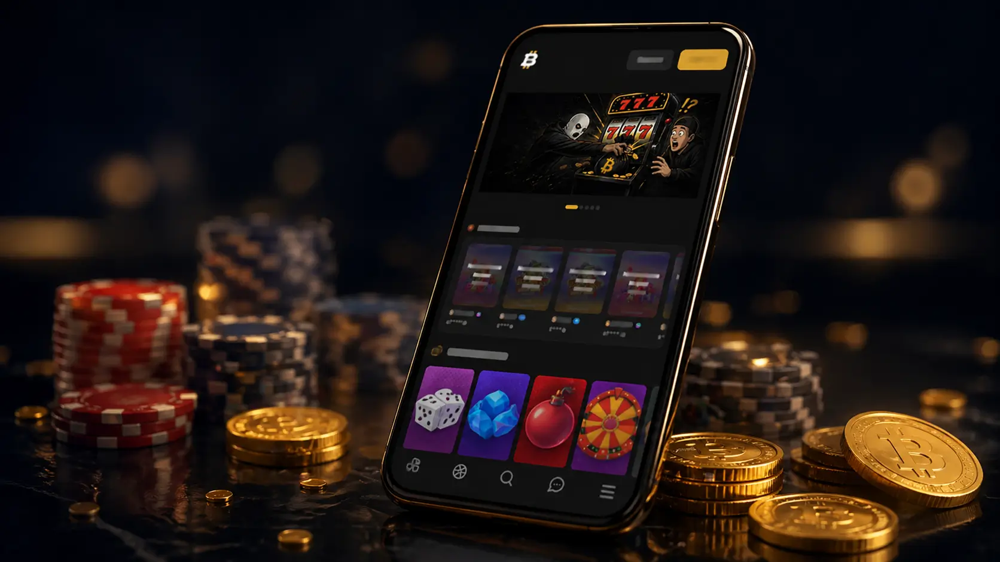
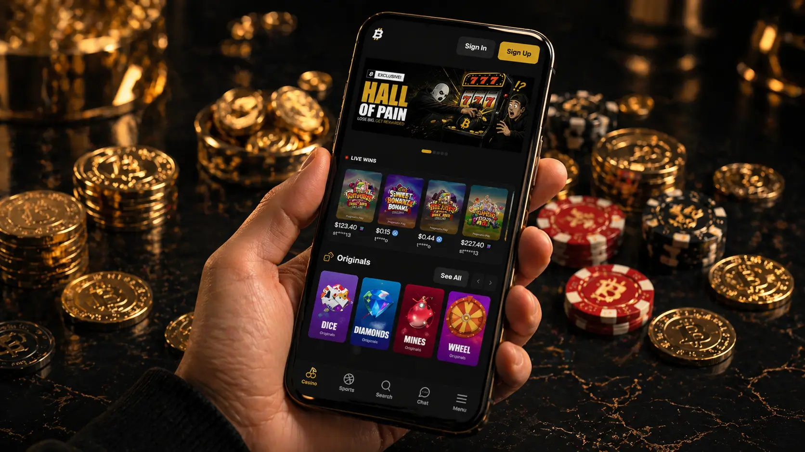

The mobile version of Bitfortune needs its own page because phone use is not just a smaller copy of desktop casino browsing. A mobile visitor moves through the site differently, sees fewer elements at once, and often switches between account pages, games, cashier options and support from a single screen. This guide focuses on practical mobile behaviour: how the menu should feel, what a player should check before depositing, why game pages need clear balance visibility, and how safer gambling tools should remain easy to find. The page keeps the same site identity while giving mobile users a dedicated explanation instead of generic desktop text.

Mobile navigation should make the most important casino areas reachable without forcing the user to search through crowded menus. A good Bitfortune mobile experience should let visitors move between registration, login, games, bonuses, cashier information and responsible gambling pages with a clear path. The user should check whether buttons are easy to tap, whether the header remains readable, and whether the account balance or login state is visible before entering any game. This matters because small navigation errors on mobile can lead to wrong sections, missed rules or accidental actions. A dedicated mobile page gives visitors a calmer explanation of how to browse before they commit to play.
A browser-based mobile casino depends on loading speed, stable layout and the way media elements behave on different screens. Heavy graphics, live streams and game providers can use more data than a simple text page, so the user should make sure their connection is reliable before starting. Bitfortune visitors should also avoid opening too many tabs or switching repeatedly during sensitive actions such as payment checks, registration steps or live game rounds. Mobile performance is not only about speed; it is also about avoiding confusion when pages refresh, menus collapse or game sessions reload. Clear browser use helps keep the experience predictable.

This supporting image area is reserved for a page-specific illustration that matches the Bitfortune visual style while making this landing page feel independent from the homepage and from the other internal pages. The image should not contain written text, logos, licence claims or copied interface elements. It should work as a decorative casino-themed visual that supports the subject of this page and keeps the layout balanced between long informational blocks. The file can stay as a temporary missing asset until the final WebP is generated and placed in the img folder with the exact filename shown in the source path.
Account access on mobile should be handled carefully because registration, login, verification and password recovery often happen on the same device used for email or payment confirmation. A Bitfortune player should enter details slowly, review forms before submitting, and avoid using public Wi-Fi for account activity. The mobile version should make privacy links, cookies information and responsible gambling tools available without hiding them behind unclear icons. This page treats account access as a central mobile topic because a clean login process is just as important as the game catalogue. The safer and clearer the account flow is, the less likely the user is to make avoidable mistakes.
Slots, live casino tables and other game categories can behave differently on mobile depending on screen orientation, provider design and connection quality. A slot might be comfortable in portrait mode, while a live table may need landscape view to show the dealer, timer and chips clearly. Bitfortune users should test readability before increasing stakes and should avoid playing when notifications, calls or low battery could interrupt the session. The goal is not to make mobile play sound risk-free, but to explain how to approach it with attention. A phone can be convenient, yet convenience should not replace deliberate decision-making.
Mobile access can make casino play easier to start, which also means limits become more important. A user may open a game during a break, while travelling or while distracted, and that can reduce control over time and budget. Bitfortune players should decide in advance whether a mobile session is appropriate, set deposit or time limits where available, and stop if play becomes automatic. The responsible approach is to treat the phone as a full casino device, not as a casual toy. This section reinforces that mobile usability is valuable only when it supports clear choices, readable rules and controlled entertainment.